Gangauli's educational landscape — primary schools, madrasas, colleges and private institutions. गंगौली का शैक्षणिक परिदृश्य — प्राथमिक विद्यालय, मदरसे, कॉलेज और निजी संस्थान।
All 11 educational institutions serving the students of Gangauli village. गंगौली गाँव के विद्यार्थियों की सेवा करने वाले सभी 11 शैक्षणिक संस्थान।
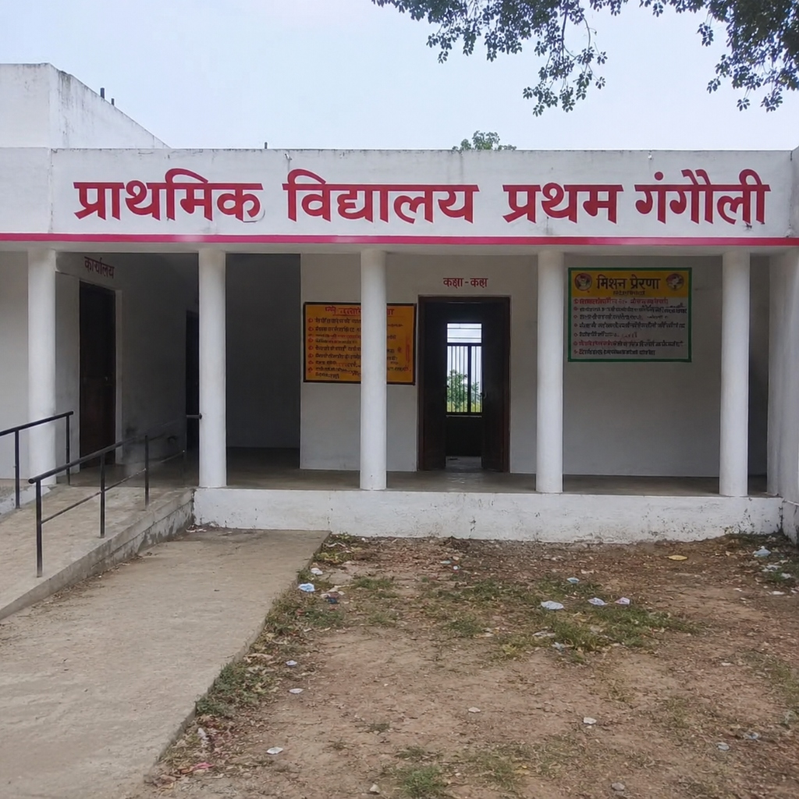
Primaryप्राथमिकGovernment primary school for Classes 1–5, serving the northern wards of Gangauli. Established under the Basic Education Department, Uttar Pradesh. Mid-day meal and free textbooks provided. कक्षा 1–5 के लिए सरकारी प्राथमिक विद्यालय, गंगौली के उत्तरी वार्डों की सेवा। बेसिक शिक्षा विभाग, उ.प्र. के अंतर्गत स्थापित। मध्याह्न भोजन और मुफ्त पुस्तकें प्रदान की जाती हैं।
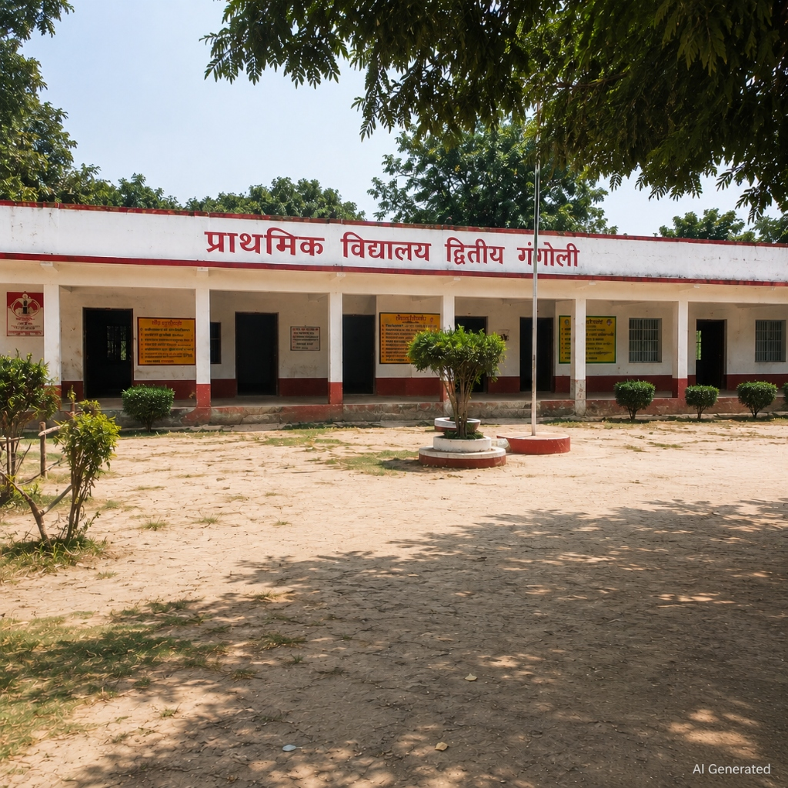
Primaryप्राथमिकSecond government primary school catering to southern & central wards. Provides mid-day meal and free textbooks under the Right to Education Act. दक्षिणी और मध्य वार्डों के लिए दूसरा सरकारी प्राथमिक विद्यालय। शिक्षा अधिकार अधिनियम के अंतर्गत मध्याह्न भोजन और मुफ्त पुस्तकें उपलब्ध।
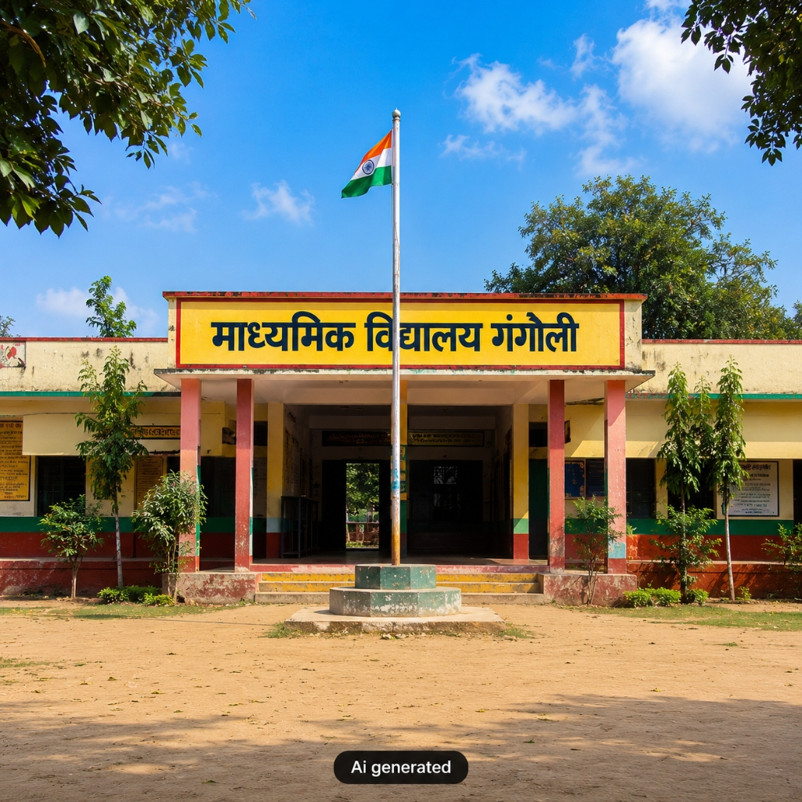
Secondaryमाध्यमिकGovernment secondary school for Classes 6–10, affiliated with UP Board. Provides quality education to students of Gangauli and surrounding villages. कक्षा 6–10 का सरकारी माध्यमिक विद्यालय, उ.प्र. बोर्ड से संबद्ध। गंगौली और आसपास के गाँवों के विद्यार्थियों को गुणवत्तापूर्ण शिक्षा प्रदान करता है।
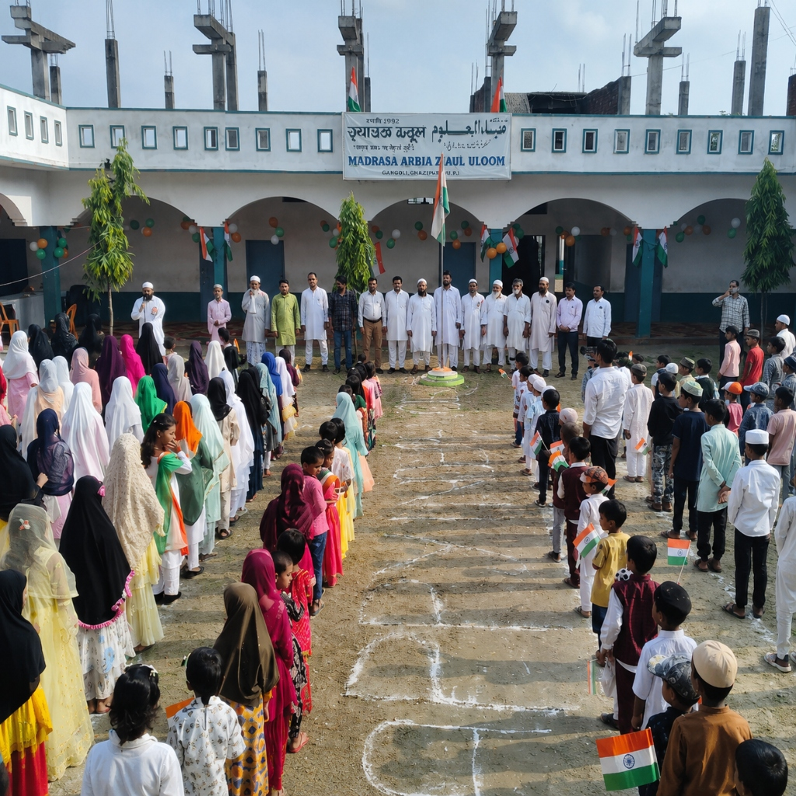
MadrasaमदरसाTraditional Islamic institution offering religious education in Arabic, Urdu & Islamic studies. Affiliated with UP Madrasa Education Board. अरबी, उर्दू और इस्लामी शिक्षा प्रदान करने वाली पारंपरिक संस्था। उ.प्र. मदरसा शिक्षा बोर्ड से संबद्ध।
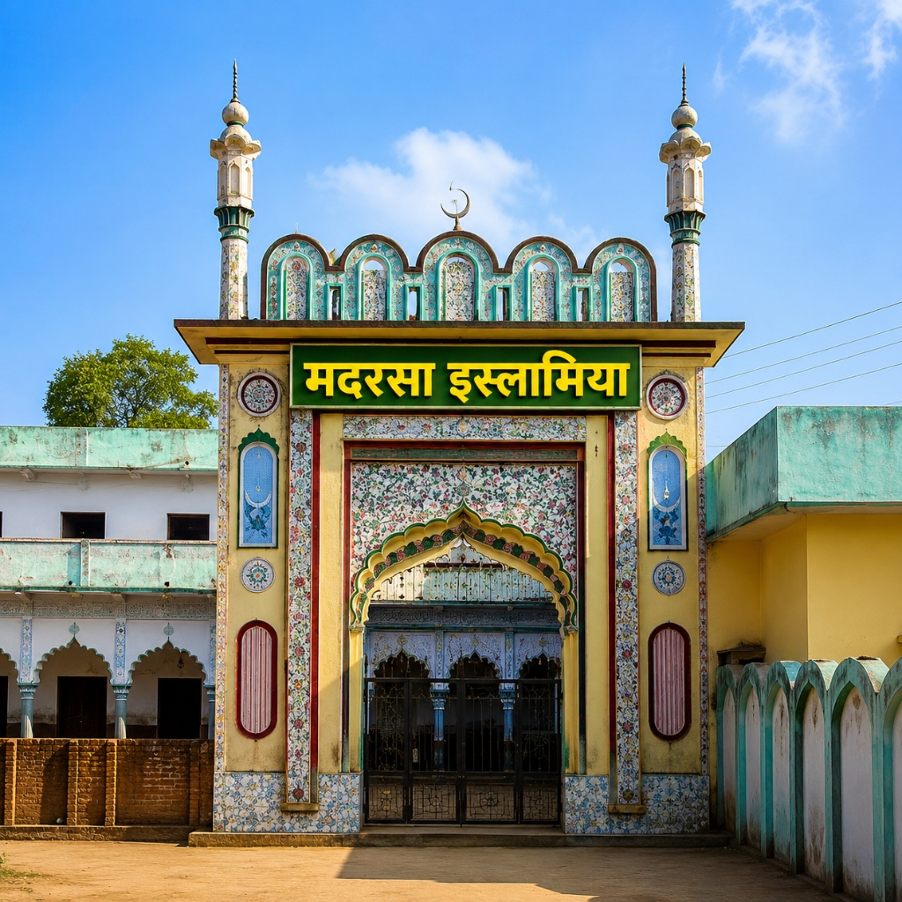
MadrasaमदरसाIslamic & general education from Maktab to Alim level. Known for combining traditional Islamic learning with modern academic subjects. मकतब से आलिम स्तर तक इस्लामी और सामान्य शिक्षा। परंपरागत इस्लामी शिक्षा और आधुनिक विषयों के संयोजन के लिए जाना जाता है।
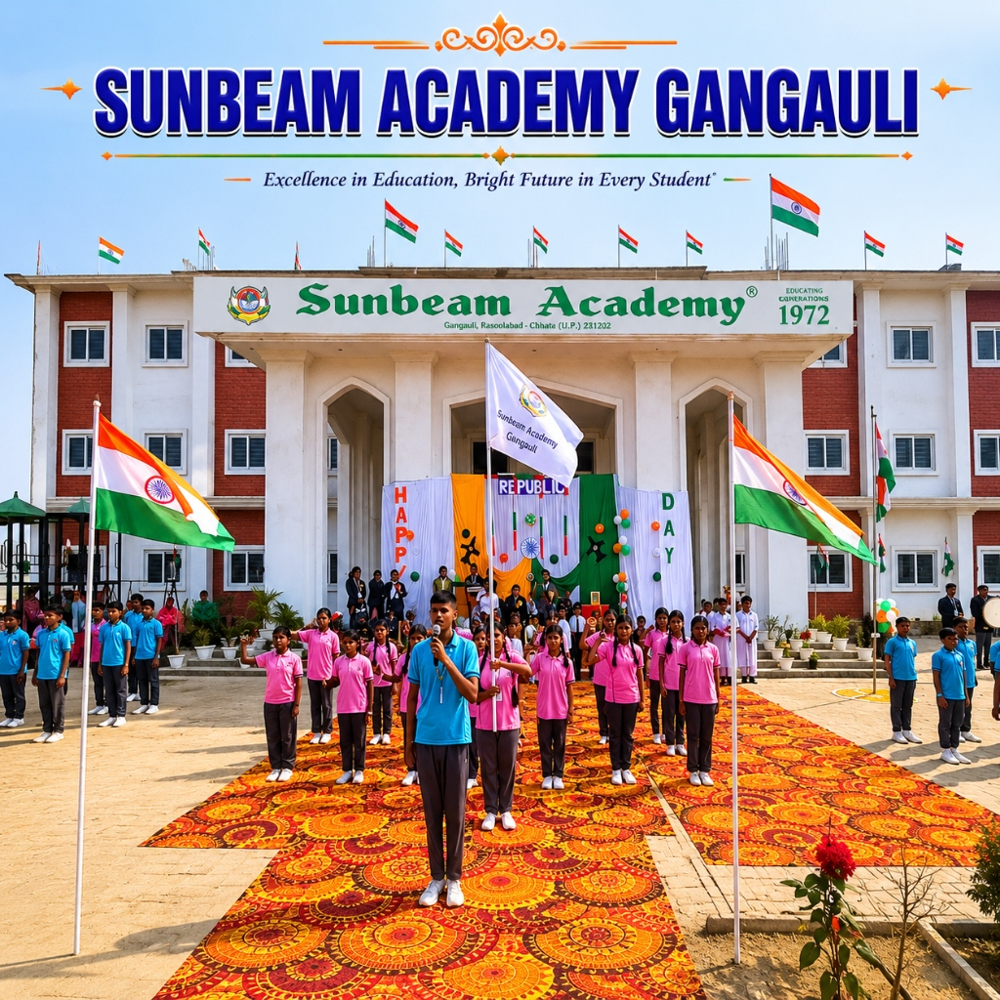
PrivateनिजीEnglish-medium private school offering quality education from Nursery to Class 8. Known for its experienced faculty, annual sports events and cultural programs. नर्सरी से कक्षा 8 तक गुणवत्तापूर्ण शिक्षा प्रदान करने वाला अंग्रेजी माध्यम निजी विद्यालय। अनुभवी शिक्षक, वार्षिक खेल उत्सव और सांस्कृतिक कार्यक्रमों के लिए जाना जाता है।
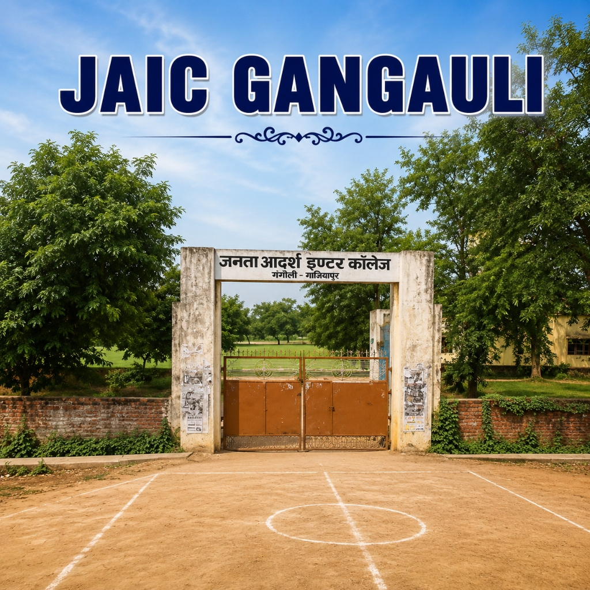
Inter Collegeइंटर कॉलेजInter College in Mubarakpur area offering Classes 6–12. Affiliated with UP Board, known for academic results and student development activities. मुबारकपुर क्षेत्र में कक्षा 6–12 का इंटर कॉलेज। उ.प्र. बोर्ड से संबद्ध, शैक्षणिक परिणामों और छात्र विकास गतिविधियों के लिए प्रसिद्ध।
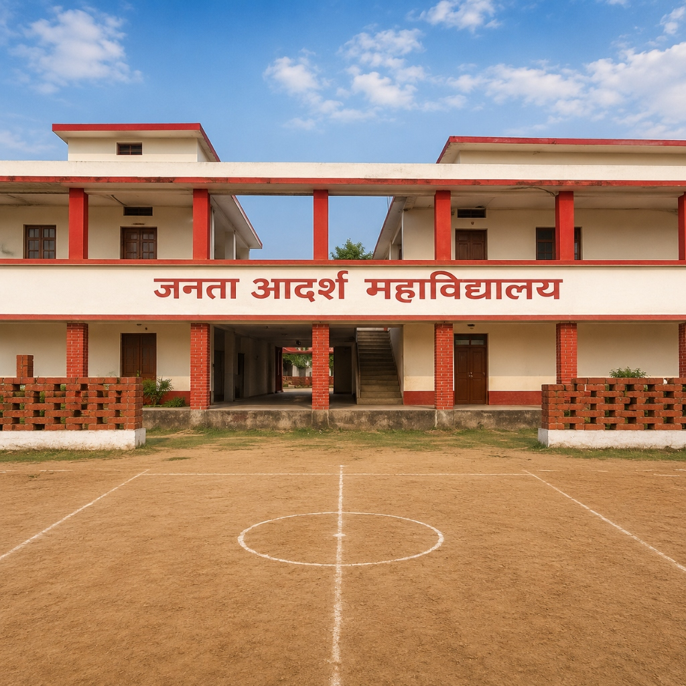
Degree Collegeमहाविद्यालयDegree college in Maksudanpur area offering graduation programs in Arts, Science & Commerce. Affiliated with Veer Bahadur Singh Purvanchal University. मकसूदनपुर क्षेत्र में स्नातक कार्यक्रम — कला, विज्ञान और वाणिज्य। वीर बहादुर सिंह पूर्वांचल विश्वविद्यालय से संबद्ध।
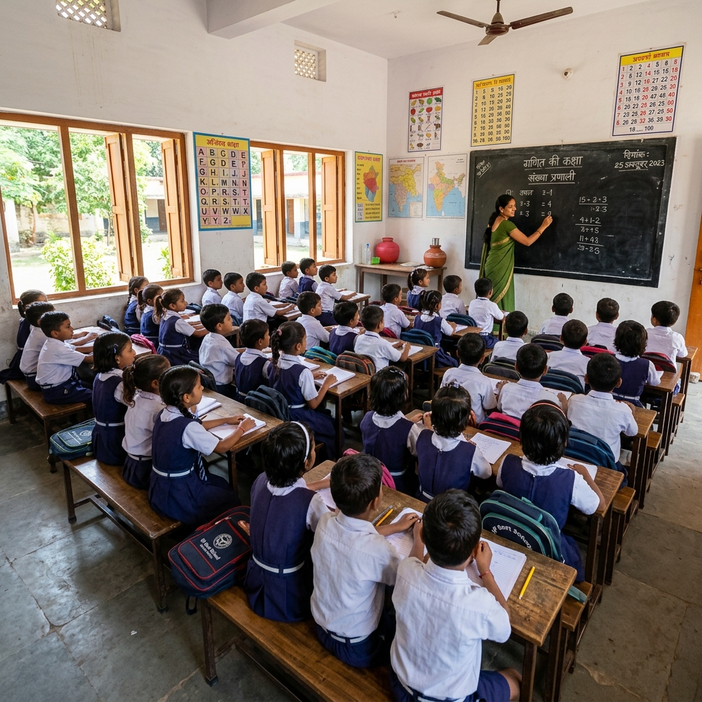
PrivateनिजीEnglish-medium private school in Mubarakpur area providing modern education from Nursery to Class 10 with focus on overall student development. मुबारकपुर क्षेत्र में अंग्रेजी माध्यम का निजी विद्यालय — नर्सरी से कक्षा 10 तक। छात्रों के सर्वांगीण विकास पर विशेष ध्यान।
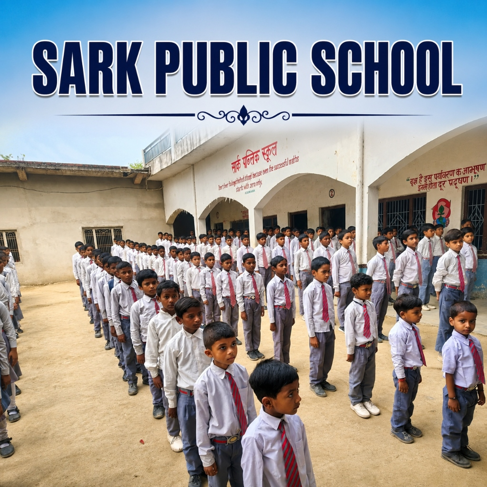
PrivateनिजीQuality private school in Mubarakpur offering holistic education from Nursery to Class 12, with modern facilities and dedicated teaching staff. मुबारकपुर में गुणवत्तापूर्ण निजी विद्यालय — नर्सरी से कक्षा 12 तक समग्र शिक्षा, आधुनिक सुविधाएँ और समर्पित शिक्षक दल।
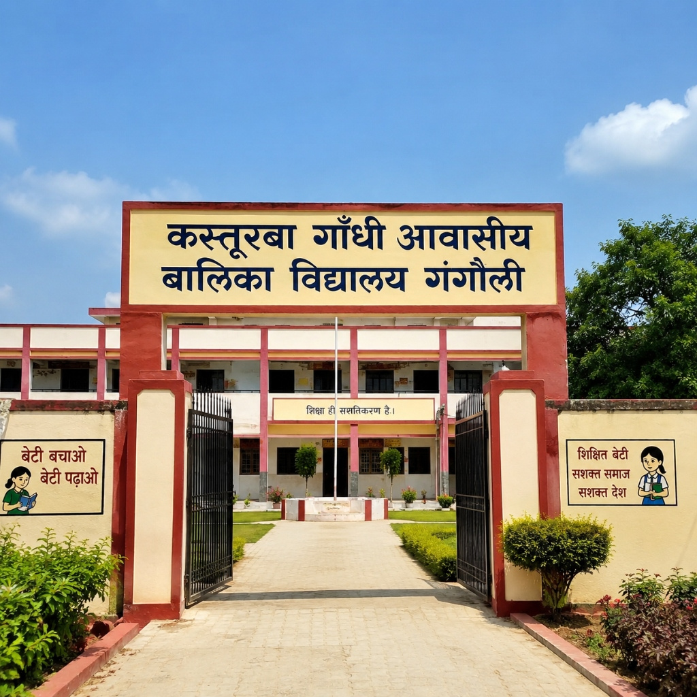
ResidentialआवासीयGovernment residential school exclusively for girls from Classes 6–8. Provides free boarding, meals, uniform & education to girls from underprivileged backgrounds under the KGBV scheme. कक्षा 6–8 की छात्राओं के लिए सरकारी आवासीय विद्यालय। केजीबीवी योजना के अंतर्गत वंचित परिवारों की बालिकाओं को मुफ्त आवास, भोजन, वर्दी और शिक्षा।